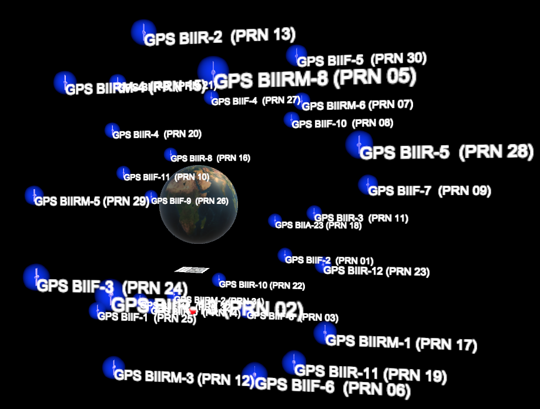
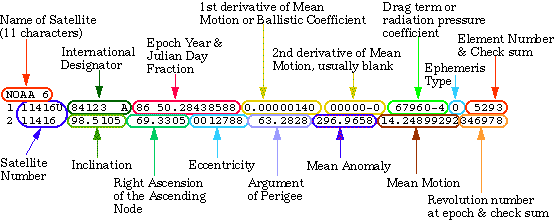
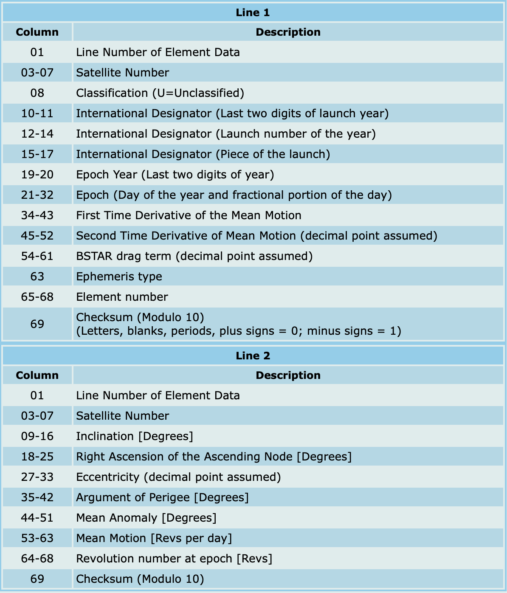

The goal of this project is to experiment data visualization using Augmented Reality and also talk about the advantages and disadvantages of this technology. It describes the key problems using the traditional methods to represent data and how it we can overcome it using AR. Some characteristics of Augmented Reality systems will be discussed and this webpage will provide an overview of them.

Data visualization is the graphical representation of information and data. Data visualization is a great way to see and understand trends, outliers, and patterns in data. The traditional forms of visualization include charts, tables, line graphs, column charts, and many other forms, these have of late been supplanted by highly insightful 3D visualizations. All the visualizations are viewed on a 2D displays. Viewing a three dimensional visualization on a two dimensional platform will not do justice to the 3D visualisations and this way it might be ineffective as well. Viewing visualization with the help of AR will open up more. The main source of inspiration for this project was this.
The first step was to learn how to build an AR application. I chose Unity to build an AR application as I have experience building applications using Unity. As a part of leaning I built an ARWatch application which deploys the watch on seeing a specific target. I used Vuforia for target recognition.
Related Links: ARWatch Demo, ARWatch tutorial, ARWatchGitHub, Vuforia documentation,
Now that I was able to build a sample AR application, the next task was to be able to build a 3D earth model in AR. It was as simple as
Related Links: Augmented Reality Earth in Unity, Create your first AR application with Unity and Vuforia
It's time to get the data of all the satellite and here are some of the sources
The data that we have is a TLE data, TLE stands for Two Line Element. Below image breaks down TLE. 
To get x,y & z points from the dataset there is a python library named SGP4 that breaks it down, I made use of this.Related Links: Understanding TLE, TLE breakdown, Orbital Coordinate System, Reading TLE programmatically, Additional source .
There are no frameworks in unity to plot the data automatically, this has to be done manually. I built a sample application to create a oribital path(Source). Another useful tutorial was this. Both these sources helped me understand how to created orbital path. In ordere to understand more about the particle system in Unity(Update: I ended up not using this int the final version), I was able to follow this and get better understanding of the particle system.
Related Links: Data Sphere, Data Sphere GitHub